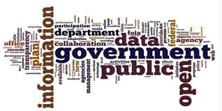

Influence of IT companies on Government

The Information Technology (IT) industry has become a major pillar of India’s economy. It contributes significantly to the Gross Domestic Product (GDP), employment, and foreign exchange earnings. As of recent reports, the Indian IT sector contributes around 7.5% to the national GDP, and this is steadily growing year by year. Top companies like TCS, Infosys, Wipro, HCL, and Tech Mahindra bring in billions of dollars through software exports, mainly to countries like the USA, UK, Canada, and Australia. Apart from just earning revenue, these companies create massive job opportunities. Over 50 lakh people are directly employed in the IT sector, and another 1.5 to 2 crore people benefit indirectly – like cab drivers, caterers, housekeeping staff, and vendors who depend on IT parks. So, it's not just techies who gain – the entire ecosystem grows. Moreover, the IT industry helps improve infrastructure. Cities like Bangalore, Hyderabad, Chennai, and Pune grew rapidly because of the tech boom. Real estate, transport, and other sectors also develop around IT hubs. The government also gets high tax revenue from these companies. Plus, IT companies help the government with digital transformation projects, improving transparency and reducing corruption. In short, without the IT sector, India’s economy won’t run the same way. It’s not just a support system anymore – it’s the engine driving modern India’s growth.
IT companies in India play a significant role in shaping government policies, especially those related to technology, data privacy, cybersecurity, and digital infrastructure. While they don't directly create laws, their expertise, industry reports, and lobbying efforts help influence the way laws and frameworks are designed. Big tech players like TCS, Infosys, Wipro, and even global giants like Google, Microsoft, and Amazon Web Services (AWS) regularly engage with government bodies such as MeitY (Ministry of Electronics and Information Technology), NITI Aayog, and Digital India initiatives. They participate in consultations and offer feedback on draft policies. For example, while making data privacy laws or AI ethics guidelines, the government invites input from major IT firms because they handle massive amounts of user data and know real-world tech risks. These companies also push for favorable tax regulations, startup support, and IT park infrastructure policies. Through industry bodies like NASSCOM, they collectively raise concerns or suggest changes in laws that affect software exports, work-from-home norms, or cloud data hosting rules. Sometimes, this influence becomes controversial, especially when foreign companies are seen as having too much say in Indian policy decisions. That’s why the government is also balancing it with "Make in India" and "Digital Sovereignty" strategies. In short, IT companies have a strong indirect hand in the policies that shape India’s digital future. They guide the government by acting as tech advisors, partners, and influencers — not rulers, but silent shapers.